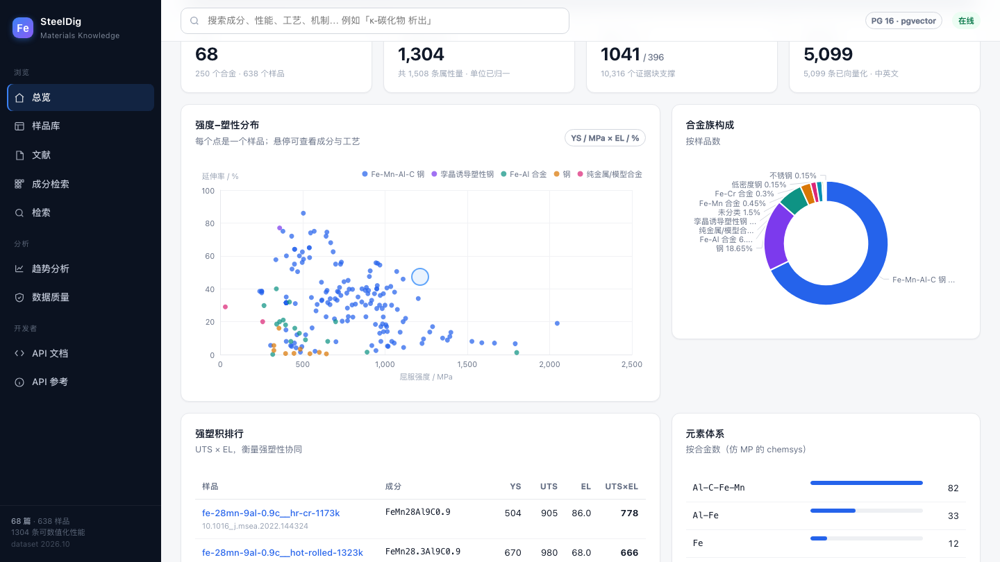
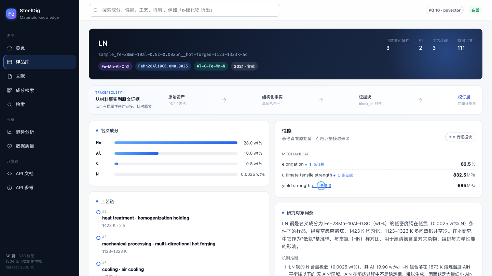
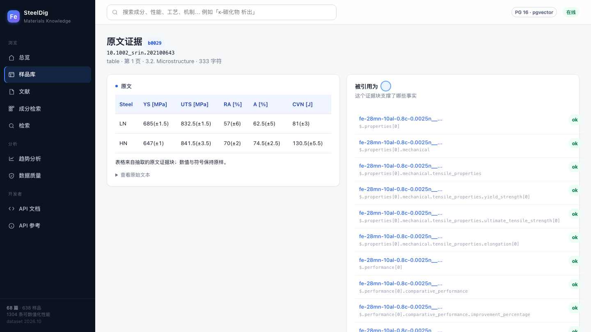
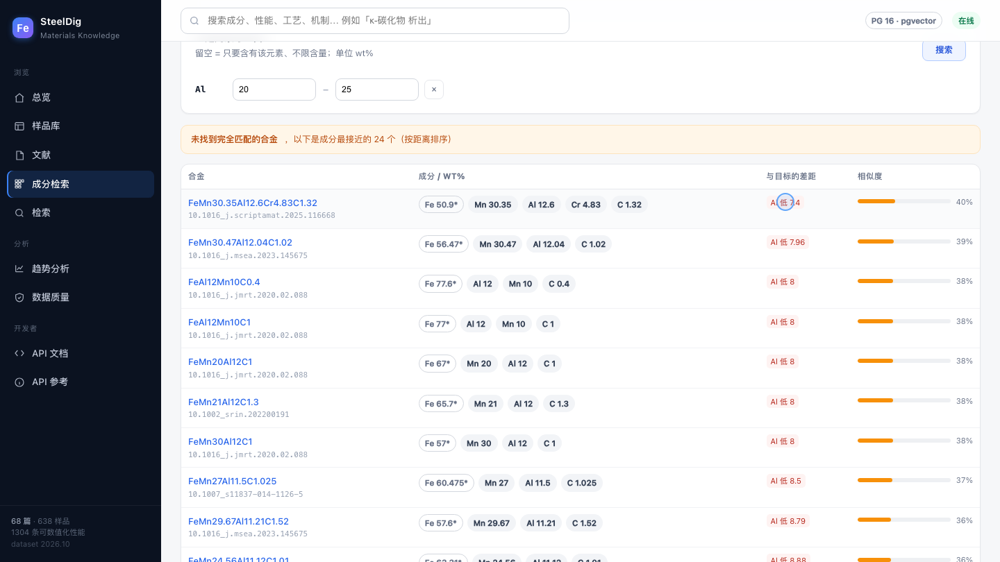
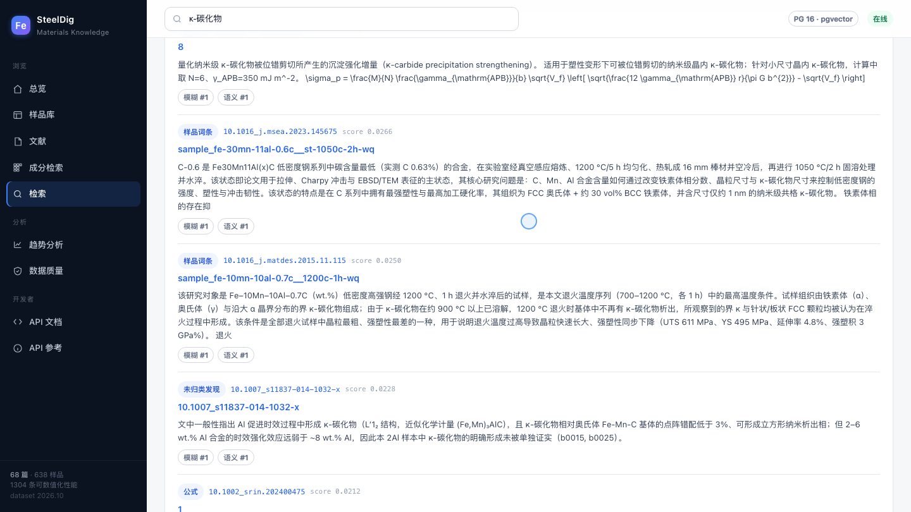
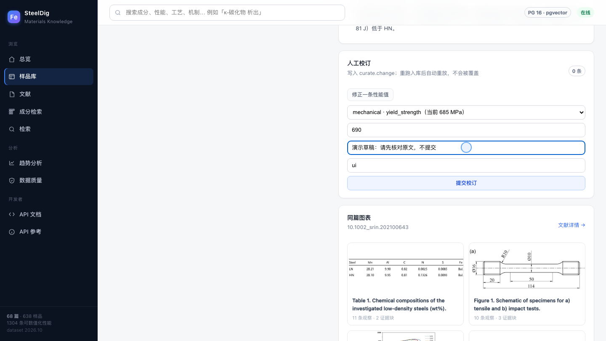
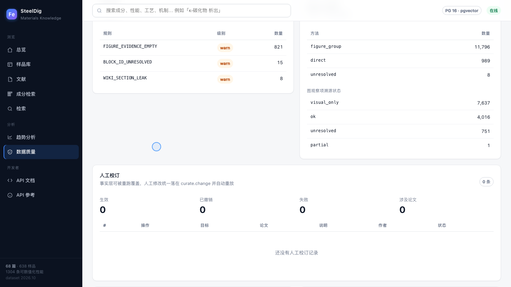

01 · 00:00–00:14让材料数据，有据可查首页停在标题和 KPI；第 6 秒缓慢下滚到强度–塑性散点图，留出阅读时间。研究材料，既要找到数据，也要核对来源。 SteelDig，把文献中的成分、工艺和性能连接起来。原始录屏 ↗
02 · 00:14–00:42从成分条件，找到候选材料依次点 Al、Mn，输入 Al 8–11、Mn 25–30 wt%，搜索。下滚展示蓝色结果条“41 个完全匹配的合金”；再滚到 FeMn28Al10C0.8N0.0025，打开 LN 样品。先从一个具体问题开始：寻找富铝、高锰的低密度钢。 选择铝和锰，设定质量百分比区间。 当前快照找到四十一个匹配的合金。 接着，打开其中的低氮样品，查看它的性能。原始录屏 ↗
03 · 00:42–01:02成分、工艺与性能，放在一起看接上镜同一 LN 样品：成分、热加工步骤、性能同屏。停在 yield strength 685 MPa，随后指向旁边的证据链接。同一页里，成分、热加工步骤和力学性能相互对应。 这个样品的屈服强度，是六百八十五兆帕。 它旁边的证据链接，可以继续追到来源。原始录屏 ↗
04 · 01:02–01:20从 685 MPa，回到原文表格点击屈服强度后的证据链接进入 b0029。停在 LN 行，核对 YS 685(±1.5)；再指向右侧引用关系。这里是抽取的原文证据块，不是 PDF 阅读器。点击证据，原文表格就在这里。 低氮样品这一行，保留了数值和误差标记。 右侧还能看到，这个证据块被哪些事实引用。原始录屏 ↗
05 · 01:20–01:40没有完全匹配，也说明差在哪里切到 Al 20–25 wt% 条件，先看区间，再下滚到橙色提示和最近候选。第一条 Al 12.6 wt%，相对目标下限低 7.4 个百分点。如果把铝的目标含量提高到百分之二十至二十五呢？ 没有完全匹配时，系统给出成分最接近的候选。 第一条的铝含量，距区间下限还差七点四个百分点。原始录屏 ↗
06 · 01:40–01:56从关键词，继续寻找相关证据输入 κ-碳化物并检索；展示来源、类型和摘要，缓慢下滚一次。是否启用语义召回，以页面实际状态为准。也可以从研究问题出发，检索卡帕碳化物。 结果汇集文献、样品词条、图表和公式， 再沿着来源，继续阅读。原始录屏 ↗
07 · 01:56–02:10校订有入口，也记录依据回到同一 LN 样品，展开“修正一条性能值”；选 yield_strength，填草稿 690 和“演示草稿：请先核对原文，不提交”。不点提交。发现数值需要修正，可以在样品页选择属性，填写新值和依据。 这一镜只展示表单，不提交修改。原始录屏 ↗
08 · 02:10–02:26看见质量状态，也看见数据边界质量页停在“无 error · 可发布”，展示 warn 规则数量，然后下滚到人工校订汇总。告警合计 821 + 15 + 8 = 844。质量页同时列出规则、溯源状态和校订记录。 当前快照是零项错误，八百四十四项告警。 告警仍需检查，不能等同于数据没有缺陷。原始录屏 ↗